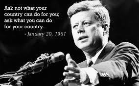
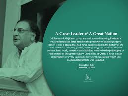

My Commitment to Change
As Prime Minister of Pakistan, war would be a last resort, undertaken only to protect sovereignty, defend the nation, and uphold the rights of our people. Against adversarial actions from India, Afghanistan, Iran, France, or Israel, I would prioritize strengthening Pakistan’s military, modernizing defense systems, and ensuring nuclear deterrence. Preparedness through alliances with friendly nations and self-reliance in weapon production would be crucial. Additionally, leveraging international law and global forums to justify and protect Pakistan's actions would be vital. Unity within the country and strategic coordination would ensure Pakistan's survival and success in any defensive or retaliatory conflict
As the Prime Minister of Pakistan, I would prioritize economic growth by creating jobs, supporting industries, and attracting foreign investments. Education would be a key focus, ensuring access to quality schools and universities for all, especially in rural areas. I would improve healthcare systems to provide affordable treatment for every citizen. Combating corruption, promoting justice, and strengthening institutions would ensure transparency and fairness. Infrastructure development, such as roads, energy, and transportation, would be expanded. I would work to reduce poverty, empower women, and address climate change through sustainable policies. Above all, fostering unity and harmony would guide my leadership vision.